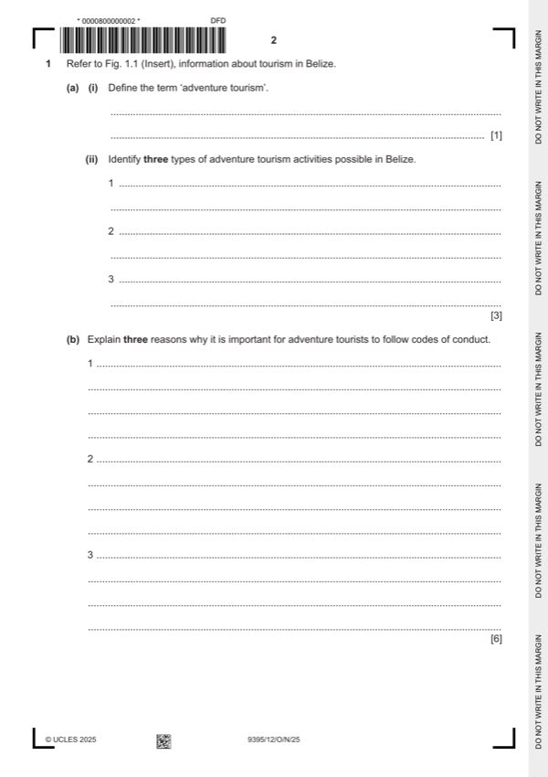

Question 1

Original paper page 2
Part 1(a)(i) — solution
Define the term ‘adventure tourism’. 1
Award one mark for a correct definition.
Responses should indicate information along the following:
This tourism is geared towards visiting destinations to take part in physically
challenging activities as well as having an element of risk.
Mark points
- Include the ideas shown in the solution above.
Part 1(a)(ii) — solution
- Scuba diving / snorkelling through Mayan cave systems
- Swimming with whale sharks
- Rafting or canoeing through rivers in Belize
- Hiking experiences to Mayan ruins
- Going to the rainforest on wildlife tours
Mark points
- Scuba diving / snorkelling through Mayan cave systems
- Swimming with whale sharks
- Rafting or canoeing through rivers in Belize
- Hiking experiences to Mayan ruins
- Going to the rainforest on wildlife tours
Part 1(b) — solution
- So that the environment is maintained (1) so that levels of erosion are
- To take care with the materials they use (1) and to ensure that rubbish is
- To maintain levels of safety (1), as some of the activities will be
- Out of respect for local people (1) they need to keep the impacts of their
Mark points
- So that the environment is maintained (1) so that levels of erosion are
- To take care with the materials they use (1) and to ensure that rubbish is
- To maintain levels of safety (1), as some of the activities will be
- Out of respect for local people (1) they need to keep the impacts of their
Part 1(c) — solution
- UNESCO world heritage site
- Mayan ruins
- Food
- Other cultural experiences
Mark points
- UNESCO world heritage site
- Mayan ruins
- Food
- Other cultural experiences
Part 1(c) — solution
- People will be attracted to the area because of the label and will want to
- Mayan ruins in various parts of the country will give an insight into the
- Food is unique to Belize because it sits between Latin America and the
- Unique, unhurried way of life which attracts people
- There should be some overall comments made about the facts that there
- Alternatively, some may consider that there are insufficient reasons to
Mark points
- People will be attracted to the area because of the label and will want to
- Mayan ruins in various parts of the country will give an insight into the
- Food is unique to Belize because it sits between Latin America and the
- Unique, unhurried way of life which attracts people
- There should be some overall comments made about the facts that there
- Alternatively, some may consider that there are insufficient reasons to
Part 1(d) — solution
Discuss the most responsible forms of transport for visitors to use in 9
destinations.
This is an extended answer response and should be marked using Table C.
University Press & Assessment 2025 Page 11 of 17
9395/12 Cambridge International AS & A Level – Mark Scheme October/November
PUBLISHED 2025
Mark points
- Include the ideas shown in the solution above.
Part 1(d) — solution
- Renewable energy and sustainable forms of transport where possible , for
- Boats with shallow keels because of reefs
- Use of water transport when possible
- Public transport rather than driving
- Cycle where possible
- Renewable energy / hybrid cars or vehicles so that less fossil fuel energy
- Water transport usage will reduce road congestion and help with
- Public transport will carry more people so reducing the number of
- Many cities have ‘hire a bike’ schemes for use
- Greater use of renewable sources would make transport cheaper to use
- Would result to less pollution which would have less impact upon the
- Transport would be sustainable
Mark points
- Renewable energy and sustainable forms of transport where possible , for
- Boats with shallow keels because of reefs
- Use of water transport when possible
- Public transport rather than driving
- Cycle where possible
- Renewable energy / hybrid cars or vehicles so that less fossil fuel energy
- Water transport usage will reduce road congestion and help with
- Public transport will carry more people so reducing the number of
- Many cities have ‘hire a bike’ schemes for use
- Greater use of renewable sources would make transport cheaper to use
- Would result to less pollution which would have less impact upon the
- Transport would be sustainable